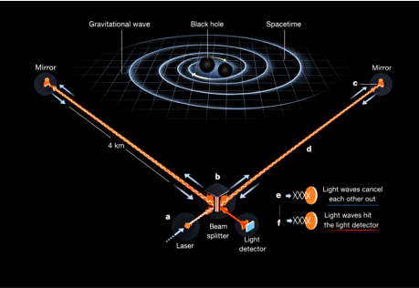
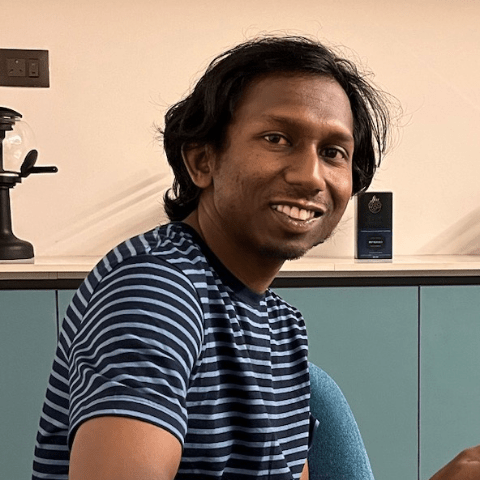

Listening to the universe through ripples in spacetime — from binary black hole mergers to neutron star collisions.
I work on Gravitational Wave physics. The research interests are probing astrophysical properties of compact binary black holes and testing Einstein's general theory of relativity, development of specialized transient search techniques for interferometric gravitational wave detectors and multi-messenger astronomy.
Full Profile →Meet our PhD students, postdocs, and alumni contributing to GW science.
→Explore our research areas, recent papers, and contributions to the LSC.
→What are gravitational waves? How are they generated, detected & analysed?
↓Gravitational waves are propagating perturbations of spacetime curvature — solutions of Einstein’s field equations in the weak-field, radiative regime. They travel at the speed of light and encode dynamical information about their sources.
In contrast to electromagnetic radiation, gravitational waves couple extremely weakly to matter. This weak coupling makes their detection experimentally challenging, but ensures that the signals arrive virtually unattenuated, preserving pristine information about highly energetic and otherwise obscured astrophysical processes.
The dominant sources are compact binaries — systems of black holes or neutron stars — whose inspiral and merger emit gravitational radiation through a time-varying mass quadrupole moment. The final coalescence releases enormous energy in gravitational waves, briefly outshining the entire electromagnetic luminosity of the observable universe.

Our group at IIT Bombay is an active member of the LIGO Scientific Collaboration (LSC), contributing to both detection and interpretation of gravitational wave events. We focus on exotic binary systems that push the boundaries of what we know about stellar evolution and gravity itself.
Searching for IMBH binaries (100–10,000 M☉) — the missing link between stellar and supermassive black holes. Our group is an active member of the IMBH subgroup in LSC.
Developing pipelines for binaries with significant orbital eccentricity — formed dynamically in dense stellar environments like globular clusters and galactic nuclei.
Applying deep learning to detect and classify GW transients, reduce noise artefacts (glitches), and push detection sensitivity beyond classical methods.
Using detected GW events to perform precision tests of GR in the strong-field dynamical regime, accessible only through compact binary observations.
We are seeking motivated graduate students and postdoctoral researchers to join our group.
Read MoreI work on Gravitational Wave physics. The research interests are probing astrophysical properties of compact binary black holes and testing Einstein's general theory of relativity, development of specialized transient search techniques for interferometric gravitational wave detectors and multi-messenger astronomy.
Department of Physics, IIT Bombay
Department of Physics, IIT Bombay
Department of Science and Technology, India
IISER Thiruvananthapuram
Albert Einstein Institute, Germany
Università di Roma “La Sapienza”, Italy
IUCAA (University of Pune)
IIT Bombay
University of Mumbai
📧 archana@phy.iitb.ac.in | archanap@iitb.ac.in
☎️ +91-22-2576-9380
🏛️ Office: 114, First Floor, Department of Physics, IIT Bombay, Powai, Mumbai – 400076
Current focus of the group is intermediate mass binary searches as well as eccentric black hole binary searches ranging from matched filter based searches, wavelet based searches to machine learning based transient searches. The group is an active member of the IMBH/eBBH subgroup in the LIGO Scientific Collaboration.
Project Student
Postdoc, Max Planck Institute for Gravitational Physics
Personal Webpage →
Assistant Professor, Department of Physics, NIT Calicut
Personal Webpage →📌 Information last updated on April 1, 2026.
Searching for IMBH binaries (100–10,000 M☉) bridging stellar and supermassive black holes. We are active members of the IMBH/eBBH subgroup in the LSC.
Pipelines for compact binaries with significant orbital eccentricity — signatures of dynamical formation in globular clusters and galactic nuclei.
Designing optimal matched filter algorithms and template banks for detecting GW signals in detector noise across exotic binary parameter spaces.
Time-frequency wavelet methods for unmodeled GW burst detection, applicable to poorly-understood or unanticipated sources.
Deep learning for GW transient classification, glitch reduction, and pushing detection sensitivity beyond classical matched filtering.
Precision tests of GR in the strong-field dynamical regime using GW observations of compact binary mergers.
Combining GW, electromagnetic, and neutrino observations for a complete picture of energetic astrophysical transients.
Extracting masses, spins, merger rates, and formation channels from the growing catalogue of GW events.
Full list: INSPIRE HEP · Google Scholar
Johann Fernandes, Archana Pai, Koustav Chandra · Physical Review D 112, 083043
Sayantan Ghosh, Leigh Smith, Jiyoon Sun, Archana Pai, Ik Siong Heng, V. Gayathri · Physical Review D 112, 063026
J. S. Bagla, M. Datta, Archana Pai et al. · Journal of Astrophysics and Astronomy 46, 1–9
Leigh Smith, Sayantan Ghosh, J. Sun, V. Gayathri, Ik Siong Heng, Archana Pai · Physical Review D 110, 083032
Ravikiran Hegde, Nirban Bose, Archana Pai · Physical Review D 110, 044026
Koustav Chandra, Archana Pai, Samson H. W. Leong, Juan Calderón Bustillo · Physical Review D 109, 104031
Sayantan Ghosh, Koustav Chandra, Archana Pai · Physical Review D 109, 064015
V. Bhalerao, D. Sawant, Archana Pai et al. · Experimental Astronomy 57, 23
Kritti Sharma, Koustav Chandra, Archana Pai · Physical Review D 108, 124061
Koustav Chandra, Juan Calderón Bustillo, Archana Pai, Ian Harry · Physical Review D 108, 123003
Dixeena Lopez, V. Gayathri, Archana Pai, Ik Siong Heng, Chris Messenger, S. K. Gupta · Physical Review D 105, 063024
Nirban Bose, Archana Pai · Physical Review D 104, 124021
M. Saleem, Javed Rana, V. Gayathri, Aditya Vijaykumar, Srashti Goyal, Surabhi Sachdev, Jishnu Suresh, S. Sudhagar, Arunava Mukherjee, Gurudatt Gaur, Bangalore Sathyaprakash, Archana Pai, Rana X Adhikari, P. Ajith, Sukanta Bose · Classical and Quantum Gravity 39 (2)
K. Chandra et al. · Physical Review D 104, 042004
Nirban Bose, Archana Pai, Koustav Chandra, V. Gayathri · Physical Review D 102, 084034
Koustav Chandra, V. Gayathri, Juan Calderón-Bustillo, Archana Pai · Physical Review D 102, 044035
V. Gayathri et al. · Physical Review D 102, 104023
A. G. Abac, Archana Pai et al. · The Astrophysical Journal Letters 993, L25
This page can contain detailed theoretical and data-analysis aspects of gravitational wave physics — waveform modelling, parameter estimation, detector physics, and numerical relativity.
Post-Newtonian, EOB, and Numerical Relativity waveforms.
LIGO/Virgo interferometry, noise sources, calibration.
Matched filtering, Bayesian inference, ML pipelines.